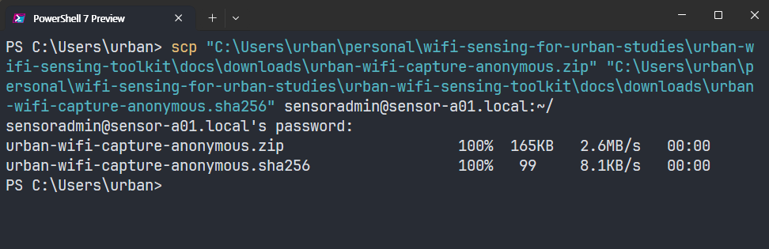

2 Install the Collector
This chapter installs the maintained WiFi collector on the Raspberry Pi. It does not yet name an experiment, create a deployment key, open a monitor interface, or collect data. Keeping installation separate from study-specific configuration makes it easier to tell whether a problem belongs to the software or to a particular deployment.
At the end of this chapter, the Pi reports collector version 1.2.9 and self-test: PASS. Both sensing services remain disabled and inactive.
2.1 Before You Begin
Allow approximately 15–30 minutes, mostly for operating-system updates and Python package installation. Keep the Pi powered and connected to the hotspot. Only the management connection prepared in the previous chapter is required; the external capture adapters are not used until experiment configuration.
You will move between two prompts:
PS C:\Users\...> Windows PowerShell
sensoradmin@sensor-a01:~ $ Raspberry Pi over SSHDo not close a terminal merely because package output pauses for a few minutes. Continue only after the command finishes and its prompt returns.
2.2 Update Raspberry Pi OS
The recording below shows the July 2026 update and reboot sequence.
From the SSH prompt on the Pi, refresh the package index and install available operating-system updates:
sudo apt update && sudo apt full-upgrade -y
sudo rebootThe && prevents the upgrade from starting when the package index fails. If APT reports an error, leave the Pi running and use the mirror troubleshooting note below; do not reboot until both update stages finish successfully. After sudo reboot, the SSH connection closes. Wait one or two minutes, then reconnect from Windows PowerShell:
ssh sensoradmin@sensor-a01.localRemain signed in as sensoradmin; use sudo only where shown below.
Click the copy icon next to a code block. If Ctrl+V does not work in the terminal, try Ctrl+Shift+V or right-click.
2.3 Transfer the Collector Package
The downloadable package is a fixed, text-only collector snapshot. It contains no deployment key, database, packet capture, or credential.
Commands containing a Windows path run in Windows PowerShell, outside SSH.
PS C:\Users\...>: the Windows computersensoradmin@sensor-a01:~ $: the Raspberry Pi over SSHroot@sensor-a01:...#: an interactive root shell
Read the prompt before pasting each command.
Download both files on Windows
Click both links above and save the files in the same folder. The example below uses the Windows Downloads folder. Open PowerShell and confirm that both filenames are present:
cd "$HOME\Downloads"
Get-ChildItem urban-wifi-capture*Do not continue until both the .zip and .sha256 files are listed.
Leave SSH before running scp
If an SSH session is open, return to Windows first:
exitThe prompt must now begin with PS. From the folder containing both downloaded files, copy them to the Pi:
scp .\urban-wifi-capture.zip `
.\urban-wifi-capture.sha256 `
sensoradmin@sensor-a01.local:~/Both files should reach 100% before the PowerShell prompt returns.

Reconnect and verify the transferred ZIP
Reconnect to the Pi from Windows PowerShell:
ssh sensoradmin@sensor-a01.localVerify the download before extracting it:
This is a first-time installation path. If ~/capture-scripts already exists from a previous attempt, move that directory aside before extracting rather than mixing two package versions in one source directory. Any deployment key or configuration from a previous installation lives under /etc/urban-sensing, not inside this extracted folder, so moving the folder aside is safe.
sha256sum -c urban-wifi-capture.sha256
sudo apt install -y unzip
unzip -oq urban-wifi-capture.zip
cd ~/capture-scripts
pwdThe checksum must report urban-wifi-capture.zip: OK, and pwd must report /home/sensoradmin/capture-scripts. Stop if the checksum does not report OK; do not install an unverified archive.
2.4 Install and Test
The following recording shows the package installation workflow as captured with version 1.2.7. The current download is version 1.2.9, which uses the same installation steps and adds a corrected graceful shutdown path for systemd. The clip ends when the installer returns to the prompt; the current 1.2.9 checkpoint is shown separately below. The recording is silent; use the controls to pause or skip through package installation.
Run the reviewed installer from ~/capture-scripts:
sudo bash install.shEnter the sensoradmin password if prompted. Dependency installation and wheel compilation can take several minutes. Wait for the prompt to return. A successful run ends with:
Installation complete. Capture was NOT enabled or started.The installer creates a root-owned runtime in /opt/urban-sensing, the non-login urban-sensing service account, a protected data directory, and two restricted systemd unit files. It does not create a deployment key or start collection.
Confirm the installed version and run the hardware-independent privacy test. The self-test uses a synthetic source address and a temporary SQLite database; it does not open a WiFi adapter or observe nearby traffic:
sudo -u urban-sensing /opt/urban-sensing/venv/bin/python -c \
'from importlib.metadata import version; print("Version:", version("urban-wifi-capture"))'
sudo -u urban-sensing /opt/urban-sensing/venv/bin/urban-wifi-capture self-testExpected output:
Version: 1.2.9
self-test: PASSFinally, verify that installation did not begin sensing:
sudo systemctl is-enabled urban-wifi-interfaces.service urban-wifi-capture.service
sudo systemctl is-active urban-wifi-interfaces.service urban-wifi-capture.serviceBoth services should report disabled and inactive. Stop here if the version or self-test differs.
The complete expected state output is:
disabled
disabled
inactive
inactiveThe first two lines mean that sensing will not start automatically at boot. The last two lines mean that neither service is running now.
Failed to fetch followed by an unreachable mirror name is a package-mirror problem, not a collector error. During the July 2026 walkthrough, one package was repeatedly redirected to an unreachable mirror. Back up the source file outside APT’s source directory and select the working example mirror:
cp /etc/apt/sources.list.d/raspbian.sources \
"$HOME/raspbian.sources.backup"
sudo sed -i \
's|http://raspbian.raspberrypi.com/raspbian|http://mirror.ossplanet.net/raspbian/raspbian|g' \
/etc/apt/sources.list.d/raspbian.sources
sudo apt-get clean
sudo apt-get update
cd ~/capture-scripts
sudo bash install.shIf this example mirror is unavailable at a later date or location, use a current entry from the official Raspbian mirror list. Do not paste an unverified third-party repository into APT merely to bypass a transient outage.
The earlier workflow used Samba for manual file transfer and Dropbox for a small remote status signal. Neither is required by the maintained collector: SSH/SCP handles installation files, and deployment status is checked through systemd and its journal. The collector never synchronizes its key, configuration, or database to cloud storage. Historical instructions can be kept separately as legacy notes, but they are not part of the first-time path.
The next chapter assigns this installed software to one experiment and one sensor.